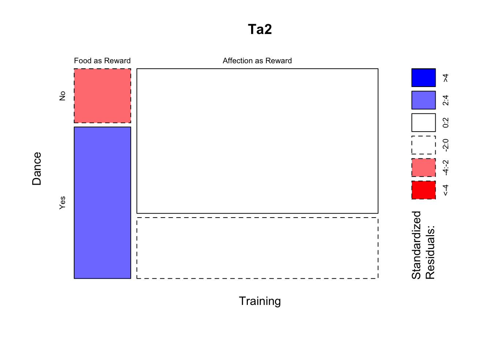
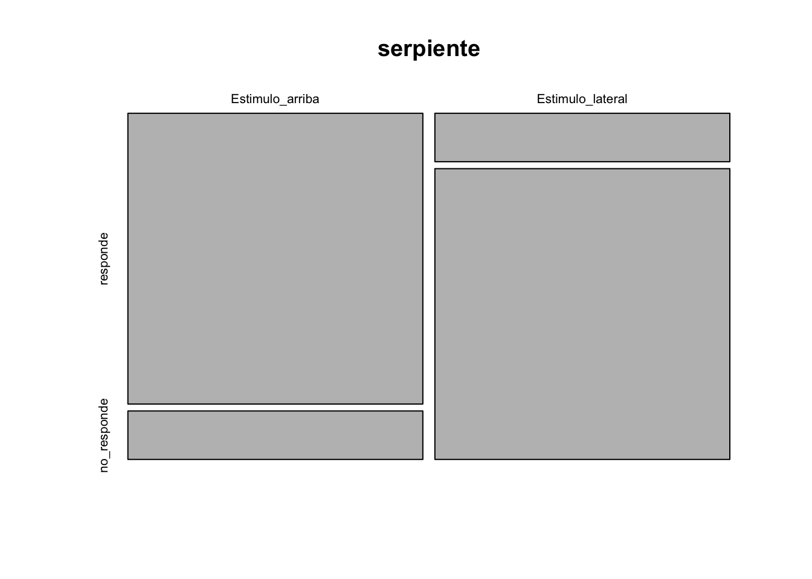

Capítulo 11 Estadística Frecuentista
Fecha de la última revisión
## [1] "2026-10-01"11.1 Bondad de ajuste y Tabla de contingencia
Este tipo de prueba se conoce frecuentemente, de forma errónea, como la prueba de Chi cuadrado. Los tipos de datos necesarios son distintos a los de las otras pruebas. En las pruebas de los próximos módulos siempre habrá por lo menos una variable continua, donde la unidad es el largo o el ancho en una unidad de medida (cm, metros, grados Celsius, etc.). Ahora, para las pruebas de Bondad de ajuste y Tabla de contingencia, se contabiliza el número de eventos por categoría. En otras palabras, es la frecuencia con que ocurre un evento.
En esta sección no estamos interesados en evaluar datos continuos como la altura o el tamaño. Las variables que se usan son categóricas; es decir, los valores son la frecuencia de un evento (o su ausencia).
Los datos tienen que caer exactamente en una categoría, por ejemplo:
- vivo o muerto.
- presente o ausente.
- blanco, rojo, verde, azul.
- estar embarazada o no.
- tener el fenotipo dominante o recesivo.
- en una herencia mendeliana, los individuos son homocigóticos recesivos, homocigóticos dominantes o heterocigóticos.
11.2 Qué son los supuestos
Cuando hablamos de supuestos estamos hablando de las condiciones necesarias para que la prueba sea utilizada. El incumplimiento de los supuestos hace que los resultados de la prueba tengan una tasa de error de tipo I y de tipo II mayor que la especificada (por ejemplo, si se elige un \(\alpha\) de 0.05, el error real sería mayor). Si se usan datos erróneos, la prueba puede ser completamente inválida.
11.3 Los supuestos de las pruebas de frecuencias.
- Los datos son frecuencias (conteos), no medidas continuas.
- Las categorías son mutuamente exclusivas (cada observación cae en una sola).
- Las observaciones son independientes unas de otras.
- Las frecuencias esperadas son suficientemente grandes: ninguna menor de 5 cuando hay 4 o menos categorías; con más categorías, no más del 20% con esperado < 5 y ninguna menor de 1.
11.4 Instalar y activar los siguientes packages
#----Instalar los paquetes si es necesario-----
#install.packages("gmodels")
#install.packages("MASS")
if (!require("pacman")) install.packages("pacman")
pacman::p_load(gmodels, MASS, gt)
#------Activar los paquetes-----
library(gmodels) ## Análisis de datos de frecuencia
library(MASS) ## funciones y datos de apoyo (nota: "mosaicplot" es de R base, paquete graphics)
library(gt) ## "Grammar of Tables", tablas más bonitas11.5 Gregor Mendel y sus guisantes
Gregor Mendel, un monje agustino, sentó las bases de la genética moderna con sus experimentos con guisantes (publicados en 1866). Las proporciones que predijo (como 3:1) son el ejemplo clásico para la prueba de bondad de ajuste, que compara las frecuencias observadas con las esperadas por una teoría.
Gregor Mendel (1822–1884), el padre de la herencia “mendeliana”, estaba interesado en determinar cómo se heredan las características de los organismos. En clases de biología y genética uno de los primeros ejemplos de herencia mendeliana es evaluar si se cumple lo que Mendel sugirió que es la razón de herencia. Si un fenotipo es heredado por un mecanismo sencillo de un gen con solamente dos alelos donde uno de los alelos es dominante y el otro es recesivo, entonces hay solamente dos fenotipos posibles. Por consecuencia, lo más básico es determinar si la frecuencia de los fenotipos en una población sigue una razón mendeliana de 3:1; en otras palabras, por cada 3 individuos de un fenotipo “x” hay un individuo del fenotipo “y”.
Los datos que usaremos provienen directamente de los trabajos de Mendel. Aquí está la publicación original en alemán y la referencia a la traducción en inglés.
Mendel, J.G. (1866). “Versuche über Pflanzenhybriden”, Verhandlungen des naturforschenden Vereines in Brünn, Bd. IV für das Jahr, 1865, Abhandlungen: 3–47, [1]. For the English translation, see: Druery, C.T.; Bateson, William (1901). “Experiments in plant hybridization” (PDF). Journal of the Royal Horticultural Society. 26: 1–32.
Tabla de los resultados del experimento original de Gregor Mendel con semillas redondas y arrugadas. Cada fila representa una planta y la cantidad de guisantes redondos o arrugados.
| Plantas | redonda | arrugada |
|---|---|---|
| 1 | 45 | 12 |
| 2 | 27 | 8 |
| 3 | 24 | 7 |
| 4 | 19 | 10 |
| 5 | 32 | 11 |
| 6 | 26 | 6 |
| 7 | 88 | 24 |
| 8 | 22 | 10 |
| 9 | 28 | 6 |
| 10 | 25 | 7 |
| Total | 336 | 101 |
En la página número 10 del artículo observamos los resultados de diferentes experimentos. En el experimento 1, la Planta #1, produjo un total de 57 semillas, de las cuales 45 eran redondas y 12 eran arrugadas. Si lo que esperamos es una razón de 3:1, las proporciones esperadas serían 0.75:0.25. Creamos un vector de datos de los valores observados (obs) y un vector de datos para la proporción esperada (esp).
11.6 Bondad de Ajuste.
La prueba de ji-cuadrado (\(\chi^2\)) fue creada por Karl Pearson en 1900 y es una de las primeras pruebas estadísticas formales de la historia. Sirvió de base para gran parte de la estadística moderna de frecuencias.
La prueba ji-cuadrado (\(\chi^2\)) compara las frecuencias observadas con las esperadas bajo la hipótesis nula. La bondad de ajuste compara una variable con proporciones teóricas; la tabla de contingencia evalúa si dos variables categóricas son independientes.
Las pruebas de bondad de ajuste y de tabla de contingencia evalúan la frecuencia en las categorías y la comparan con un modelo nulo. En este caso lo que se compara es la frecuencia observada \(o\) con la frecuencia esperada \(e\). La fórmula es la siguiente:
\[\chi^2=\sum_{i=1}^{k}\frac{(o_i-e_i)^2}{e_i}\]
Usamos un ejemplo sencillo de los datos de Mendel haciendo los cálculos a mano de una proporción 3:1 de herencia de los fenotipos redonda:arrugada. Los datos son de la primera línea de uno de los experimentos que hizo Mendel.
57*.75## [1] 42.75
57*.25## [1] 14.25
library(knitr)
library(kableExtra)
df <- data.frame(Calculos = c("Observado","Esperado", "(o-e)", "(o-e)^2", "$$\\frac{(o-e)^2}{e}$$", "$$\\chi_{total}^2$$"),
Redonda = c(45, 42.75, 2.25,5.0625, 0.1184, ""),
Arrugada = c(12,14.25, -2.25,5.0625 ,0.3553, ""),
Total = c("","","","","",0.4737))
kable(df, escape=FALSE)| Calculos | Redonda | Arrugada | Total |
|---|---|---|---|
| Observado | 45 | 12 | |
| Esperado | 42.75 | 14.25 | |
| (o-e) | 2.25 | -2.25 | |
| (o-e)^2 | 5.0625 | 5.0625 | |
| \[\frac{(o-e)^2}{e}\] | 0.1184 | 0.3553 | |
| \[\chi_{total}^2\] | 0.4737 |
Los pasos para calcular el Chi cuadrado:
- Calcular los valores esperados, en este caso con una proporción de 3:1
- Calcular las diferencias
- Cuadrar las diferencias
- Dividir por el valor esperado (da los Chi cuadrado parciales)
- Sumar los valores del paso anterior.
- Buscar en una tabla de Chi cuadrado el valor crítico para la cantidad de categorías menos 1 y el \(\alpha\) correspondiente. En este caso se busca un \(\alpha\) de 0.05 y el grado de libertad (k-1) = 2-1 = 1, donde k es el número de categorías.
Para determinar si el valor de Chi cuadrado observado es significativo, se compara con el valor crítico (de la tabla). Aquí usamos R para conseguir este valor. Nota que aquí se usa (1-0.05 = 0.95) y el grado de libertad, que es 1. Ahora se compara ese valor con 0.4737. Si el valor observado es menor que 3.841459, no se rechaza la hipótesis nula. En este caso no hay evidencia de que los fenotipos se hereden de forma diferente a 3:1.
qchisq(0.95, 1)## [1] 3.841459No hay ninguna razón para hacer los cálculos a mano si tenemos a R para hacerlos. Nota que aquí se hace la misma prueba con los mismos datos y obtenemos el mismo resultado.
11.7 Primer ejemplo
Lo que uno observa es que la prueba de Bondad de ajuste tiene un Chi cuadrado de 0.47, p = 0.49. Como el valor de p es mayor a 0.05, no se rechaza la hipótesis nula: la frecuencia no es diferente de una proporción de 3:1.
chisq.test(x, p): prueba de ji-cuadrado.
-
Bondad de ajuste:
xes un vector de frecuencias observadas yplas proporciones esperadas por la teoría (deben sumar 1). -
Independencia: si
xes una tabla de contingencia (matriz), prueba si dos variables categóricas están asociadas. - Cómo leer: el valor-p indica si las frecuencias observadas se apartan de las esperadas; p < 0.05 → sí difieren.
obs<-c(45,12) # los valores observado
esp<-c(0.75,0.25) # este el modelo nulo
chisq.test(x=obs, p=esp)##
## Chi-squared test for given probabilities
##
## data: obs
## X-squared = 0.47368, df = 1, p-value = 0.4913
# Cuando el valor de p es mayor a 0.05 no se rechaza la hipótesis nula
# En el caso presente no se rechaza que la herencia es de 3:111.8 Segundo ejemplo
Ahora evaluamos si la frecuencia de semillas redondas:arrugadas de todo el experimento sigue un patrón de 3:1. Se observa un Chi cuadrado de 0.83 y un valor de p = 0.36; otra vez el valor está por encima de 0.05, y se concluye que la frecuencia de semillas redondas:arrugadas no es distinta de 3:1. No se rechaza la hipótesis nula.
Vemos que, al reevaluar los experimentos de G. Mendel, obtenemos un resultado que apoya sus predicciones. Nota que G. Mendel NO tenía pruebas estadísticas para determinar si las frecuencias eran diferentes o no de 3:1; él hizo observaciones y llegó a sus conclusiones. ¿Recuerdas cuándo y por quién fue desarrollado este método?
obs<-c(336,101)
esp<-c(0.75,0.25)
chisq.test(x=obs, p=esp)##
## Chi-squared test for given probabilities
##
## data: obs
## X-squared = 0.83066, df = 1, p-value = 0.362111.9 Prueba de independencia, Tabla de contingencia RxC
#install.packages("MASS", dependencies = TRUE)Esta prueba se usa para evaluar si dos variables categóricas son independientes.
Los siguientes datos son de Field, Miles and Field 2012.
Este conjunto de datos representa un experimento ficticio en el que se trata de entrenar 200 gatos para que bailen según si se les da una recompensa o no. Está basado en el concepto del psicólogo ruso Iván Pávlov (1849–1936) de que se puede motivar una acción dando una recompensa. Ese proceso se llama “condicionamiento”: un aprendizaje que ocurre por la asociación entre un estímulo ambiental y un comportamiento.
<https://en.wikipedia.org/wiki/Ivan_Pavlov>
Primero entramos los datos directamente en una tabla.
Los datos son los siguientes:
A 38 gatos se les dio una recompensa, y de estos 28 bailaron y 10 no bailaron. A 162 no se les dio recompensa, y de estos 48 bailaron y 114 no bailaron.
Se crean dos listas con los resultados, se unen con cbind() y después se les añade un nombre a las filas con rownames(). Vemos ahora la tabla de frecuencias de cuántos gatos bailaron o no y si fueron entrenados con comida o cariño. Nota que no se puede añadir la tilde ~ a la n de cariño.
#Crear la tabla de contingencia
comida <- c(10, 28)
carino <- c(114,48)
catsTable <- cbind(comida, carino) # la función "cbind", une listas en columnas, la "c" es para columna
rownames(catsTable)<-c("No_bailan", "bailan") # Añade el nombre a las filas
catsTable## comida carino
## No_bailan 10 114
## bailan 28 4811.10 La hipótesis NULA
La hipótesis nula es que la cantidad de gatos que bailan o no es independiente de si recibieron comida o cariño.
11.11 La hipótesis alterna
La cantidad de gatos que bailan depende de si recibieron cariño o comida.
11.12 Gráfico de Mosaico
Podemos visualizar la frecuencia de los datos con un gráfico de mosaico. Si la hipótesis nula fuera cierta, la organización de las cajas debería ser más o menos de la misma proporción (relativa a su frecuencia). En este caso, la caja de los que reciben comida y no bailan es mucho más pequeña que la de los que bailan y reciben comida. Nota que esto no es una prueba, es una visualización de los datos que puede ayudar a entender el patrón.
mosaicplot(catsTable, color =TRUE) # función de R base (paquete graphics)
Haz una tabla con diferentes frecuencias y grafícalas con mosaicplot para evaluar cómo cambia el gráfico.
11.13 Prueba de Independencia de frecuencia.
En inglés se le conoce como “Contingency Tables”.
Los valores esperados en este caso son calculados directamente de la tabla. Para cada celda \(E_{ij}\), la i representa la fila y la j la columna. El valor esperado se calcula multiplicando la suma de la fila \({R_i}\) por la suma de la columna \({C_j}\) y dividiendo por N. La fórmula de los valores esperados es la siguiente, donde la N es la suma total de datos. El primer paso es sumar las filas y las columnas de la tabla.
catsTable## comida carino
## No_bailan 10 114
## bailan 28 48
library(tidyverse)
ct=tribble(~fila, ~comida, ~carino, ~suma,
"No_bailan", 10, 114, 124,
"bailan", 28, 48, 76,
"suma", 38, 162, 200)
ct## # A tibble: 3 × 4
## fila comida carino suma
## <chr> <dbl> <dbl> <dbl>
## 1 No_bailan 10 114 124
## 2 bailan 28 48 76
## 3 suma 38 162 200- R= Rows
- C= Columns
- E = Expected
- N = Total sum
\[E_{ij}=\frac{\left(R_i\cdot C_j\right)}{N}\]
- F= Fila
- C= Columna
- E = Esperado
- N = Suma total
\[E_{ij}=\frac{\left(F_i\cdot C_j\right)}{N}\].
Calculemos dos de los valores esperados
- Los gatos que reciben comida y bailan
\[E_{21}=\frac{\left(R_2\cdot C_1\right)}{N}= \frac{(76*38)}{200}=14.44\]
- Los gatos que reciben cariño y no bailan
\[E_{12}=\frac{\left(R_1\cdot C_2\right)}{N}= \frac{(124*162)}{200}=100.44\]
La prueba es exactamente igual como la anterior donde comparamos el valor observado con el valor esperado. Por tener más de una fila, la fórmula cambia.
\[\chi^2=\sum_{i}\sum_{j}\frac{(o_{ij}-e_{ij})^2}{e_{ij}}\]
El Chi cuadrado final es
\[\chi^2=\frac{(10-23.56)^2}{23.56}+\frac{(28-14.44)^2}{14.44}+\frac{(114-100.44)^2}{100.44}+\frac{(48-61.56)^2}{61.56}=25.36\]
\[\chi^2=25.36\]
11.14 Cómo calcular el grado de libertad
11.14.0.0.2 N columnas = 2
#df=(R-1)*(C-1)
df=(2-1)*(2-1)
df## [1] 1¿Cuál es el valor de Chi cuadrado crítico?
1-.95 = 0.05
qchisq(.95,1 )## [1] 3.84145911.15 La función CrossTable
CrossTable(tabla, chisq = TRUE, fisher = TRUE, expected = TRUE) (paquete gmodels).
- Qué hace: para una tabla de contingencia, muestra las frecuencias observadas y esperadas y realiza las pruebas de ji-cuadrado y exacta de Fisher a la vez.
-
Útil:
expected = TRUEpermite ver si se cumple el supuesto de frecuencias esperadas ≥ 5.
Con esta función se calcula el chi cuadrado con los valores esperados. Nota la leyenda al principio para poder entender la organización de los datos. El grado de libertad se calcula con la siguiente fórmula: el número de filas -1 multiplicado por la cantidad de columnas -1, df = (R-1)(C-1); df significa grado de libertad. Si tiene solamente 1 grado de libertad hay que usar el resultado de la prueba de Yates de continuidad, que hace una corrección por usar una distribución continua (la \(\chi^2\)) para aproximar frecuencias que son discretas (tabla 2x2).
\[\chi^2=\sum_{i}\sum_{j}\frac{(|o_{ij}-e_{ij}|-0.5)^2}{e_{ij}}\]
Instalar el paquete gmodels para la función CrossTable
p <0.05 se rechaza la hipótesis nula
p >0.05 no se rechaza la hipótesis nula
library(gmodels)
CrossTable(catsTable, fisher = TRUE, chisq = TRUE,
expected = TRUE, sresid = TRUE, format = "SAS")##
##
## Cell Contents
## |-------------------------|
## | N |
## | Expected N |
## | Chi-square contribution |
## | N / Row Total |
## | N / Col Total |
## | N / Table Total |
## |-------------------------|
##
##
## Total Observations in Table: 200
##
##
## |
## | comida | carino | Row Total |
## -------------|-----------|-----------|-----------|
## No_bailan | 10 | 114 | 124 |
## | 23.560 | 100.440 | |
## | 7.804 | 1.831 | |
## | 0.081 | 0.919 | 0.620 |
## | 0.263 | 0.704 | |
## | 0.050 | 0.570 | |
## -------------|-----------|-----------|-----------|
## bailan | 28 | 48 | 76 |
## | 14.440 | 61.560 | |
## | 12.734 | 2.987 | |
## | 0.368 | 0.632 | 0.380 |
## | 0.737 | 0.296 | |
## | 0.140 | 0.240 | |
## -------------|-----------|-----------|-----------|
## Column Total | 38 | 162 | 200 |
## | 0.190 | 0.810 | |
## -------------|-----------|-----------|-----------|
##
##
## Statistics for All Table Factors
##
##
## Pearson's Chi-squared test
## ------------------------------------------------------------
## Chi^2 = 25.35569 d.f. = 1 p = 4.767434e-07
##
## Pearson's Chi-squared test with Yates' continuity correction
## ------------------------------------------------------------
## Chi^2 = 23.52028 d.f. = 1 p = 1.236041e-06
##
##
## Fisher's Exact Test for Count Data
## ------------------------------------------------------------
## Sample estimate odds ratio: 0.1519927
##
## Alternative hypothesis: true odds ratio is not equal to 1
## p = 1.311709e-06
## 95% confidence interval: 0.06086544 0.352389
##
## Alternative hypothesis: true odds ratio is less than 1
## p = 7.7122e-07
## 95% confidence interval: 0 0.3131634
##
## Alternative hypothesis: true odds ratio is greater than 1
## p = 0.9999999
## 95% confidence interval: 0.07015399 Inf
##
##
## Pearson: \(\chi^2\) = 25.36, df = 1, p = 0.000000477
Con la corrección de Yates: \(\chi^2\) = 23.52, df = 1, p = 0.0000012
En ambos casos se rechaza la hipótesis nula.
Enlace a un Video de la serpiente

- Ejercicio: Un herpetólogo sospecha que las serpientes de agua hembras que se alimentan en el lago Michigan migran a los estanques del interior en el otoño para dar a luz a sus crías. Si esta hipótesis es correcta, cabría esperar que las hembras fueran mucho más propensas a migrar en ese momento que los machos. Se recopilaron los siguientes datos. (De Havel et al.)
| Migrantes | No Migrantes | |
|---|---|---|
| Hembra | 25 | 2 |
| Machos | 4 | 30 |
- ¿Cuál es la hipótesis nula?
- ¿Cuál es la hipótesis alterna?
- Calcula los valores esperados
- Calcula el Chi cuadrado
- ¿Se rechaza o no se rechaza la Ho?11.16 Análisis con datos en formato de tabla
Estos son los mismos datos pero no sumados; en otras palabras, es información específica sobre cada gato, su tratamiento y si bailó o no. La ventaja de este método es que uno no tiene que hacer el cálculo y sumar las frecuencias: se deja que la función CrossTable haga la suma. Miren bien la tabla.
## Los datos sin sumar
Training<-c(rep(0, 38), rep(1, 162))
Dance<-c(rep(0, 10), rep(1, 28), rep(0, 114), rep(1, 48))
Training<-factor(Training, labels = c("Food as Reward", "Affection as Reward"))
Dance<-factor(Dance, labels = c("No", "Yes"))
catsData<-data.frame(Training, Dance)
## catsData Los datos completos
gt(head(catsData, n=6))| Training | Dance |
|---|---|
| Food as Reward | No |
| Food as Reward | No |
| Food as Reward | No |
| Food as Reward | No |
| Food as Reward | No |
| Food as Reward | No |
| Training | Dance |
|---|---|
| Affection as Reward | Yes |
| Affection as Reward | Yes |
| Affection as Reward | Yes |
| Affection as Reward | Yes |
| Affection as Reward | Yes |
Nota que aquí se llama cada columna aparte en la función (catsData\(Training, catsData\)Dance).
11.17 Prueba de independencia
# usando los datos en formato de data frame **catsData**
CrossTable(catsData$Training, catsData$Dance,
fisher = TRUE, chisq = TRUE, expected = TRUE,
sresid = TRUE, format = "SPSS")##
## Cell Contents
## |-------------------------|
## | Count |
## | Expected Values |
## | Chi-square contribution |
## | Row Percent |
## | Column Percent |
## | Total Percent |
## | Std Residual |
## |-------------------------|
##
## Total Observations in Table: 200
##
## | catsData$Dance
## catsData$Training | No | Yes | Row Total |
## --------------------|-----------|-----------|-----------|
## Food as Reward | 10 | 28 | 38 |
## | 23.560 | 14.440 | |
## | 7.804 | 12.734 | |
## | 26.316% | 73.684% | 19.000% |
## | 8.065% | 36.842% | |
## | 5.000% | 14.000% | |
## | -2.794 | 3.568 | |
## --------------------|-----------|-----------|-----------|
## Affection as Reward | 114 | 48 | 162 |
## | 100.440 | 61.560 | |
## | 1.831 | 2.987 | |
## | 70.370% | 29.630% | 81.000% |
## | 91.935% | 63.158% | |
## | 57.000% | 24.000% | |
## | 1.353 | -1.728 | |
## --------------------|-----------|-----------|-----------|
## Column Total | 124 | 76 | 200 |
## | 62.000% | 38.000% | |
## --------------------|-----------|-----------|-----------|
##
##
## Statistics for All Table Factors
##
##
## Pearson's Chi-squared test
## ------------------------------------------------------------
## Chi^2 = 25.35569 d.f. = 1 p = 4.767434e-07
##
## Pearson's Chi-squared test with Yates' continuity correction
## ------------------------------------------------------------
## Chi^2 = 23.52028 d.f. = 1 p = 1.236041e-06
##
##
## Fisher's Exact Test for Count Data
## ------------------------------------------------------------
## Sample estimate odds ratio: 0.1519927
##
## Alternative hypothesis: true odds ratio is not equal to 1
## p = 1.311709e-06
## 95% confidence interval: 0.06086544 0.352389
##
## Alternative hypothesis: true odds ratio is less than 1
## p = 7.7122e-07
## 95% confidence interval: 0 0.3131634
##
## Alternative hypothesis: true odds ratio is greater than 1
## p = 0.9999999
## 95% confidence interval: 0.07015399 Inf
##
##
##
## Minimum expected frequency: 14.44
# Se puede hacer un gráfico de los resultados
Ta2= xtabs(~Training+Dance, data=catsData)
Ta2## Dance
## Training No Yes
## Food as Reward 10 28
## Affection as Reward 114 48
mosaicplot(Ta2, shade=TRUE)
11.18 ¿El color de pelo es independiente del sexo?
En la siguiente tabla se encuentra el color de pelo de estudiantes de la UPR. La hipótesis es que el color de pelo no está asociado al sexo de los estudiantes.
| Color de pelo | Mujer | Hombre |
|---|---|---|
| Negro | 32 | 55 |
| Marrón | 43 | 65 |
| Rubio | 16 | 64 |
| Rojo | 9 | 16 |
Creamos la tabla de contingencia.
Negro=c(32,55)
Marron=c(43, 65)
Rubio=c(16,64)
Rojo=c(9,16)
HairColour=cbind(Negro,Marron, Rubio,Rojo)
rownames(HairColour)<-c("Mujer", "Hombre") # Añade el nombre a las filas
HairColour## Negro Marron Rubio Rojo
## Mujer 32 43 16 9
## Hombre 55 65 64 16- Cada categoría tiene una frecuencia esperada suficientemente grande:
- ninguna de las frecuencias esperadas es menor de 5 cuando hay 4 o menos categorías
- no más de 20% de las categorías tienen un valor esperado < 5 cuando hay más de 4 categorías, y ninguna tiene un valor esperado menor de 1. Puede haber valores esperados entre 1 y 5, pero en no más de 20% de las categorías.
¿Cuál es la hipótesis nula? ¿Cuál es la hipótesis alterna?
El resultado de la prueba. ¿Se rechaza o no se rechaza la hipótesis nula?
CrossTable(HairColour, fisher = TRUE, chisq = TRUE, expected = TRUE, sresid = TRUE, format = "SPSS")##
## Cell Contents
## |-------------------------|
## | Count |
## | Expected Values |
## | Chi-square contribution |
## | Row Percent |
## | Column Percent |
## | Total Percent |
## | Std Residual |
## |-------------------------|
##
## Total Observations in Table: 300
##
## |
## | Negro | Marron | Rubio | Rojo | Row Total |
## -------------|-----------|-----------|-----------|-----------|-----------|
## Mujer | 32 | 43 | 16 | 9 | 100 |
## | 29.000 | 36.000 | 26.667 | 8.333 | |
## | 0.310 | 1.361 | 4.267 | 0.053 | |
## | 32.000% | 43.000% | 16.000% | 9.000% | 33.333% |
## | 36.782% | 39.815% | 20.000% | 36.000% | |
## | 10.667% | 14.333% | 5.333% | 3.000% | |
## | 0.557 | 1.167 | -2.066 | 0.231 | |
## -------------|-----------|-----------|-----------|-----------|-----------|
## Hombre | 55 | 65 | 64 | 16 | 200 |
## | 58.000 | 72.000 | 53.333 | 16.667 | |
## | 0.155 | 0.681 | 2.133 | 0.027 | |
## | 27.500% | 32.500% | 32.000% | 8.000% | 66.667% |
## | 63.218% | 60.185% | 80.000% | 64.000% | |
## | 18.333% | 21.667% | 21.333% | 5.333% | |
## | -0.394 | -0.825 | 1.461 | -0.163 | |
## -------------|-----------|-----------|-----------|-----------|-----------|
## Column Total | 87 | 108 | 80 | 25 | 300 |
## | 29.000% | 36.000% | 26.667% | 8.333% | |
## -------------|-----------|-----------|-----------|-----------|-----------|
##
##
## Statistics for All Table Factors
##
##
## Pearson's Chi-squared test
## ------------------------------------------------------------
## Chi^2 = 8.987184 d.f. = 3 p = 0.02946177
##
##
##
## Fisher's Exact Test for Count Data
## ------------------------------------------------------------
## Alternative hypothesis: two.sided
## p = 0.02410446
##
##
## Minimum expected frequency: 8.333333
#df=(R-1)*(C-1)
df=(2-1)*(4-1)
df## [1] 3
.2*8## [1] 1.6
qchisq(.95,3 )## [1] 7.81472811.19 Prueba Exacta de Fisher
La prueba Exacta de Fisher es similar a la prueba de independencia (tabla de contingencia) para evaluar si hay asociación entre dos variables categóricas. La diferencia importante es que no es necesario que el valor esperado sea mayor de 5. Por consecuencia, se puede usar con muestras más pequeñas.
Cuando alguna frecuencia esperada es pequeña (< 5) en una tabla 2×2, usa la prueba exacta de Fisher en lugar de la ji-cuadrado: no depende de la aproximación de frecuencias grandes.
11.19.1 Los supuestos de la prueba Exacta de Fisher.
- Los datos son frecuencias.
- Las frecuencias son mutuamente exclusivas (no caen en múltiples categorías).
- Las observaciones son independientes unas de otras.
- La tabla tiene 2 filas y 2 columnas.
Usando los datos de serpientes del ejemplo 7.4 del libro de Havel et al.
responde <- c(6,1)
no_responde <- c(1,6)
serpiente <- cbind(responde, no_responde)
rownames(serpiente)<-c("Estimulo_arriba", "Estimulo_lateral") # Añade el nombre a las filas
serpiente## responde no_responde
## Estimulo_arriba 6 1
## Estimulo_lateral 1 6
CrossTable(serpiente, fisher = TRUE, chisq = TRUE,
expected = TRUE, sresid = TRUE, format = "SAS") # esa prueba no debería usarse##
##
## Cell Contents
## |-------------------------|
## | N |
## | Expected N |
## | Chi-square contribution |
## | N / Row Total |
## | N / Col Total |
## | N / Table Total |
## |-------------------------|
##
##
## Total Observations in Table: 14
##
##
## |
## | responde | no_responde | Row Total |
## -----------------|-------------|-------------|-------------|
## Estimulo_arriba | 6 | 1 | 7 |
## | 3.500 | 3.500 | |
## | 1.786 | 1.786 | |
## | 0.857 | 0.143 | 0.500 |
## | 0.857 | 0.143 | |
## | 0.429 | 0.071 | |
## -----------------|-------------|-------------|-------------|
## Estimulo_lateral | 1 | 6 | 7 |
## | 3.500 | 3.500 | |
## | 1.786 | 1.786 | |
## | 0.143 | 0.857 | 0.500 |
## | 0.143 | 0.857 | |
## | 0.071 | 0.429 | |
## -----------------|-------------|-------------|-------------|
## Column Total | 7 | 7 | 14 |
## | 0.500 | 0.500 | |
## -----------------|-------------|-------------|-------------|
##
##
## Statistics for All Table Factors
##
##
## Pearson's Chi-squared test
## ------------------------------------------------------------
## Chi^2 = 7.142857 d.f. = 1 p = 0.007526315
##
## Pearson's Chi-squared test with Yates' continuity correction
## ------------------------------------------------------------
## Chi^2 = 4.571429 d.f. = 1 p = 0.03250944
##
##
## Fisher's Exact Test for Count Data
## ------------------------------------------------------------
## Sample estimate odds ratio: 23.4961
##
## Alternative hypothesis: true odds ratio is not equal to 1
## p = 0.02913753
## 95% confidence interval: 1.250285 1881.882
##
## Alternative hypothesis: true odds ratio is less than 1
## p = 0.9997086
## 95% confidence interval: 0 936.8179
##
## Alternative hypothesis: true odds ratio is greater than 1
## p = 0.01456876
## 95% confidence interval: 1.721066 Inf
##
##
##
### ¿Este ejercicio cumple con los supuestos?Se pueden visualizar los datos con el gráfico de mosaico.
mosaicplot(serpiente)
Nota que se usa la misma función que antes, pero en los resultados hay que fijarse en la sección que dice Fisher’s Exact test. Lo que uno observa es que el valor de p es menor de 0.05; por consecuencia, se rechaza la hipótesis nula. Esto significa que, para la serpiente, el ángulo del que proviene el estímulo produce una respuesta diferente.
fisher.test(serpiente)##
## Fisher's Exact Test for Count Data
##
## data: serpiente
## p-value = 0.02914
## alternative hypothesis: true odds ratio is not equal to 1
## 95 percent confidence interval:
## 1.250285 1881.881639
## sample estimates:
## odds ratio
## 23.4961